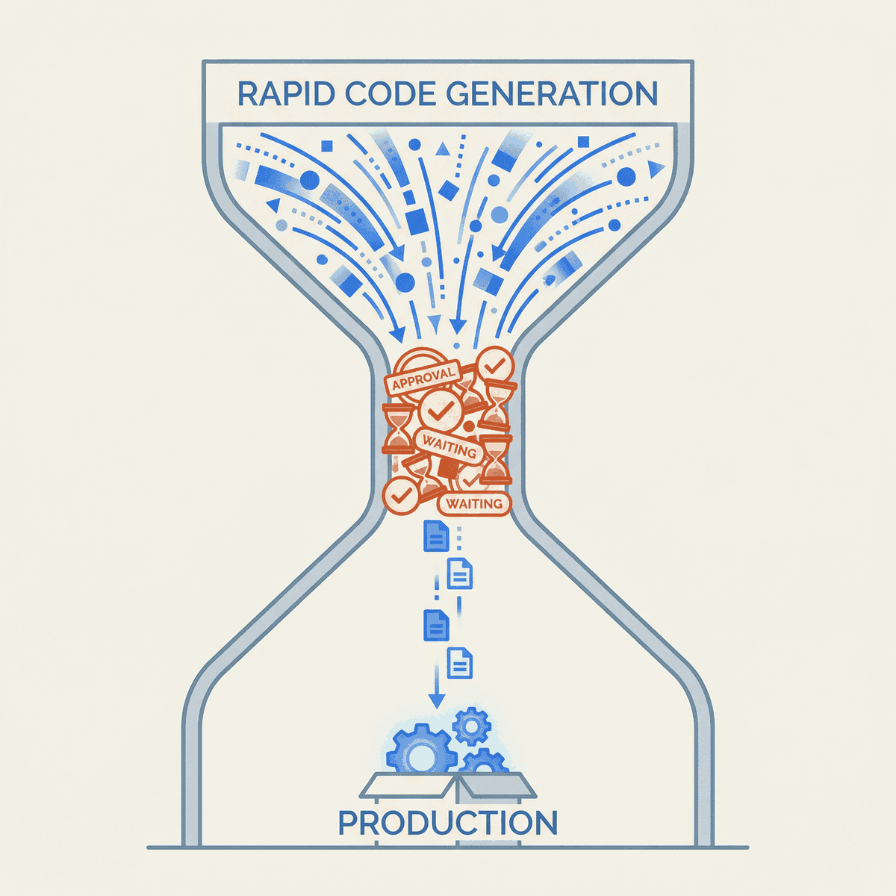

Execution Is Cheap Now—Why Your Approval Process Is Killing Innovation

TL;DR
- AI has made execution cheap—developers complete 21% more tasks and merge 98% more PRs, but companies see no improvement in delivery velocity
- The bottleneck has shifted from “can we build it?” to “can we get permission?”—PR review times have increased 91% even as output soars
- Permission-by-default beats permission-by-exception—teams with decision-making autonomy consistently outperform those waiting on approvals
- Audit your approval tax this week: count the gates between idea and production, then eliminate the ones that aren’t earning their keep
Here’s a paradox I keep seeing: Teams using AI coding tools complete 21% more tasks and merge 98% more pull requests. Sounds like a productivity revolution, right?
But there’s a catch. PR review time has increased 91%.
AI is making developers faster. Companies aren’t seeing the gains. The bottleneck has shifted—and most organizations haven’t noticed.
This post builds on an insight from Nate Jones: when execution becomes cheap, permission structures designed for expensive execution become the constraint. The companies that recognize this shift will outperform those still gatekeeping every decision.
The bottleneck has moved
Before AI, execution was the constraint. Writing code, debugging, translating specs into working software—that’s where the time went. AI has dramatically reduced that friction.
The data is striking: developers using AI tools complete 21% more tasks, touch 47% more PRs per day, and report feeling significantly more productive. Most engineering teams now use AI coding tools.
But here’s the paradox: a 2025 controlled study found experienced developers actually took 19% longer with AI—while believing they were 20% faster. And at the company level, there’s no significant correlation between AI adoption and improved delivery velocity. Individual output goes up. Organizational throughput stays flat.
The bottleneck has moved. It’s no longer execution. It’s everything else: approvals, reviews, decisions, waiting.
If your developers are faster but your delivery isn’t, you don’t have a people problem. You have a process problem.
Why AI makes this worse
AI amplifies whatever process you have—efficient or broken.
When AI helps developers generate more code, the existing bottleneck of code review gets significantly worse. Output goes up. Review capacity stays flat. The queue grows.
Here’s the vicious cycle I’ve seen play out:
- AI generates code faster
- Batch sizes grow (might as well wait for more changes)
- Reviews take longer
- Developers context-switch while waiting
- Quality drops, requiring more review
- Repeat
DORA’s research confirms this pattern: heavyweight change approval processes negatively impact software delivery performance. A system moves only as fast as its slowest link. Right now, for most organizations, that slowest link is human approval.
Your AI investment is generating negative returns if your approval process can’t keep pace. You’re paying for a sports car and driving it in first gear.
What high-performing teams do differently
Elite teams have flipped the model. Permission is the default, not the exception.
The data backs this up. Teams with decision-making autonomy show stronger performance across all DORA metrics. Elite performers deploy multiple times per day, recover from failures in less than an hour, and maintain change failure rates as low as 5%.
Small teams consistently outperform larger ones on per-person productivity—20% higher PR velocity and 25% faster lead times—largely because they have less coordination overhead.
The pattern is consistent:
- Lightweight change approval workflows
- Automation for low-risk changes
- Minimal manual approvals (each one compounds delay)
- Trust engineers with real decisions
Amazon’s two-pizza teams. Valve’s no-hierarchy structure. The common thread isn’t the specific organizational model—it’s that engineers have permission to execute without running every decision through a committee.
Permission by default: the new model
The old model looks like this:
- Ask permission
- Wait for approval
- Execute
- Get reviewed
The new model inverts it:
- Execute (small batch)
- Show results
- Iterate
- Ask forgiveness for the rare mistakes
This requires three things:
Clear boundaries. Engineers need to know what they can decide autonomously. Not everything—but more than most companies allow today.
Trust in your people. If you don’t trust your engineers to make good decisions, you have a hiring problem, not a process problem.
Psychological safety. Mistakes can’t be career-ending. When every error triggers an inquisition, people stop taking initiative.
The organizations that win will restructure for cheap execution—shifting from permission-by-exception to permission-by-default.
— Clarke Bishop
The cost of a wrong decision has dropped. Most bad code can be reverted in minutes. Most wrong architectural choices can be corrected within a sprint. The cost of slow decisions—missed market windows, demoralized engineers, competitors who ship while you deliberate—hasn’t changed at all.
A practical diagnostic
How do you know if approvals are killing your velocity? Here’s a quick diagnostic:
Measure the gap
- How long from “idea” to “code complete”?
- How long from “code complete” to “in production”?
If the second number is larger than the first, you have a process problem, not a development problem.
Calculate your approval tax
- Count the approvals required to ship a feature
- Multiply by average wait time per approval
- Add 23 minutes per approval for context-switching cost
That’s your approval tax on every feature. What’s it buying you?
Ask the hard questions
- When was the last time an engineer shipped something without asking permission?
- How many people need to say “yes” before code reaches production?
- What’s the smallest change that requires a meeting?
If your answers make you uncomfortable, you know where to focus.
When approvals make sense
I’m not saying eliminate all approvals. That would be reckless.
Approvals exist for reasons—compliance, risk management, coordination across teams. In regulated industries like healthcare and fintech, some gates are non-negotiable.
But even in those environments, the answer isn’t more approvals. It’s smarter approvals:
Automate low-risk changes. If a change follows established patterns and passes automated tests, why does a human need to review it?
Streamline medium-risk changes. Single approver, async review, clear SLAs. No committee meetings for routine work.
Reserve heavyweight process for high-risk, irreversible decisions. Database schema changes that affect production. Security-critical code paths. Architectural decisions that will be expensive to reverse.
The goal isn’t zero approvals. It’s appropriate approvals. Most organizations have far too many.
The organizational implications
This isn’t just about software delivery. It’s about how companies will need to operate.
When execution was expensive, layers of management made sense. You needed people to allocate scarce resources, to decide which projects were worth the investment, to coordinate large teams of specialists.
When execution is cheap, those layers become overhead. Flatter structures—fewer approval layers, more autonomous teams—aren’t just fashionable. They’re economically rational.
The companies that figure this out will:
- Move faster than competitors still stuck in approval loops
- Attract better talent (engineers want autonomy, not permission slips)
- Learn faster through rapid iteration rather than slow deliberation
The companies that don’t will wonder why their AI investments aren’t paying off.
What to do this week
AI has made execution cheap. The bottleneck has moved from “can we build it?” to “can we get permission?”
Audit your approval process this week. Count the gates between idea and production. Calculate the real cost—not just wait time, but context-switching, demoralized engineers, and missed opportunities.
Then start removing the gates that aren’t earning their keep.
The organizations that win won’t be the ones with the best AI tools. They’ll be the ones that restructured their processes to match the new reality: execution is cheap, and permission should be the default.
Ready to accelerate your engineering velocity? Let’s talk about how fractional CTO support can help your team ship faster without sacrificing quality.